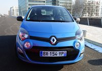

Après 3 ans de carrière, la Renault Mégane 3 passe par l'inévitable ravalement de façade. L'occasion pour elle de se rendre plus désirable grâce à de nouveaux moteurs et un équipement technologique remis au goût du jour, à défaut de profiter de la même audace stylistique que la Twingo elle aussi récemment restylée…
En attendant l'arrivée de la Clio 4, de la Zoé et d'un renouveau de sa gamme Alpine, Renault ronge son frein avec une gamme bien vieillissante. Enregistrant seulement 59.340 immatriculations tous véhicules confondus sur les deux premiers mois de l'année (-33,9 %), le Losange a connu des jours meilleurs.
Alors pour patienter le temps que le restylage de la Twingo fasse effet et rehausse ces chiffres, Billancourt sauve les meubles et met à jour ce qui reste malgré tout son porte-drapeau : la Mégane (145.220 ex sur 2011, 3ème véhicule vendu en France).
Une mise à niveau qui arrive alors qu'on observe une tendance montante chez les constructeurs, le retour en grâce des moteurs essence.
En effet, si le Diesel est bien ancré dans le paysage automobile français (97 % de l'ensemble du parc) et si le prix à la pompe joue toujours en sa faveur, la réalité n'est pas toujours aussi rose pour l'automobiliste.
Entre les révisions plus chères et les filtres à particules qui s'encrassent quand on roule peu, la rentabilité à long terme n'est plus garantie comme avant.
D'autant qu'à l'échelle du pays on marche sur la tête. La France surproduit de l'essence sans-plomb qu'elle exporte et reste obligée d'importer massivement de gasoil. Ceci, ajouté à la volonté de Bruxelles de taxer les carburants en fonction de l'autonomie qu'ils offrent et la future norme Euro6, pourrait clairement faire basculer la balance vers le sans-plomb dans les années à venir.
Ainsi au côté des récents 1.4 TSI à coupure de cylindres, Fiat TwinAir ou autre Ford Ecoboost 1.0 de 125 ch, Renault fait lui aussi valoir ses talents de motoristes avec un nouveau bloc 1.2 TCe de 115 ch.
Ne boudons donc pas notre chance de pouvoir étrenner autre chose qu'un gros Diesel qui tâche et découvrons ce que cette Mégane 3 restylée a dans le ventre !
On aurait pu croire qu'à l'instar d'une Twingo 2 revigorée avec maestria, la Mégane suivrait le même chemin et reprendrait sur sa robe les codes vestimentaires des concepts Dezir ou Captur.
Pas de chance, la compacte feuilletait les tendances 2012 trop en amont de la saison. Le couturier Van Dan Acker n'ayant pas encore investi à l'époque la maison du "Créateur d'automobiles", la Mégane n'a pas pu profiter de la patte du Hollandais.
Résultat, cette remise au goût du jour se trouve plus proche dans les faits de la Laguna restylée que de la mini-citadine phare.
On retrouve donc un léger affinement du trait de la face avant qui s'accompagne de touches de chrome et de plastiques noir brillants, ainsi que de feux de jour à LED (de série sur Dynamique) positionnés suivant les versions à la base des phares ou dans les écopes d'antibrouillard (sur GT & GT Line).
En guise de complément, les baguettes des portes tout comme les rétroviseurs adoptent la teinte carrosserie quelque soit la finition et deux nouveaux tons font leur apparition.
Le dessin des jantes évolue aussi légèrement et il est désormais possible de choisir (sur Coupé) entre 3 stickers de toit.
Bref, du mieux mais pas de quoi sauter au plafond et se retourner à chaque passage d'une Mégane en ville (contrairement à la réussie Zoé).
A l'intérieur en revanche, force est de constater que Renault a fait plus d'efforts. Le camaïeu blanc/noir de notre version GT-Line Cool Grey (option) est magnifique et le Losange a ajouté de nombreux équipements à son habitacle.
Dès le premier niveau, on a droit à un nouvel autoradio MP3 avec Bluetooth et connexion USB en façade (adieu ces maudits clapet et cendrier qui gênaient), ainsi qu'à un nouveau clignotant à impulsion (idéal sur l'autoroute). Le niveau supérieur Expression ajoute un capteur de toxicité de l'air qui bascule automatiquement sur “Recyclage “pour éviter de respirer le pot d'un vieux camion.
Sur Dynamique on profite désormais des radars de recul, et sur Bose de l'aide au stationnement avec caméra de recul.

A noter que cette dernière finition permet de profiter en option (800 €) du pack Hi-Tech comprenant une caméra de recul et le système “Visio Système“.
Cet ange gardien surveille votre franchissement de ligne et allume/coupe automatiquement les pleins phares lorsque vous croisez quelqu'un ou rentrez dans une agglomération.
Pas mal pour un généraliste.
Sous le capot, Renault a mis le paquet. En dehors des nouveaux blocs mazout 1.6 dCi 130 ch Energy (vu sur Scenic) et 1.5 dCi 110 ch profitant du Start & Stop, la gamme accueille un nouveau moteur essence 1.2 TCe.
Remplaçant le 1.6 16v de 110 ch, ce quatre pattes downsizé gagne 5 ch sur son prédécesseur et fait appel à toute l'expertise du Losange en F1 pour consommer moins et obtenir des taux de CO2 plus flatteurs.
Construit en aluminium, ce bloc se distingue en effet par de multiples raffinements : l'injection directe, la suralimentation turbo, une architecture dite “carrée“ (le diamètre du cylindre —l'alésage— est égale à la course du piston) pour une meilleure combustion, une réduction des frottements par l'emploi de jupes de piston en graphite, de poussoirs d'arbre à cames en revêtement DLC (Diamond Like Carbon) et d'une chaîne de distribution optimisée revêtue de Teflon, une mise en température rapide, et enfin un start & stop avec récupération d'énergie au freinage.
Tout ceci permet à ce moteur d'afficher un couple équivalent à un moteur 2.0 (190 Nm entre 2.000 et 4.000 tr/min) et des conso en baisse de 25 % par rapport au 1.6 atmo (5,3 l/100 km annoncés).
Au vu d'un sacrifice minime des perfs (V-Max de 190 km/h contre 195 pour le 1.6, le 0 à 100 en 10,9 s. vs 10,5), les émissions de CO2 se situent elles à 119 g/km seulement. Plutôt pas mal !
In situ, ce bloc est un agréable compagnon de route. Bien qu'atone sous les 2.000 tr/min, il fait preuve ensuite de montées en régime très correctes et étonne à la fois par son silence de fonctionnement et par une relative onctuosité sur les premiers rapports.
En ville, sa souplesse d'utilisation ajoutée à son start & stop ultra rapide et endurant surprend également.
Conjugué à une boite douce privilégiant les économies, ce moteur s'avère reposant et incite à la conduite coulée sans se montrer jamais à la traine sur l'autoroute.
Ceci dit, même si les cinquième et sixième rapports de boite donnent vraiment envie de faire la sieste tant ils sont long, il ne faudra pas vous assoupir au volant, sous peine de subir le bip-bip de l'avertisseur de franchissement de ligne optionnel.
Très précis, ce dernier pense à votre sécurité avant tout, un peu moins à vos oreilles. Si le bruit n'est pas désagréable, il peut vite devenir embêtant quand vous arpentez les petites départementales.
Le désactiver tient alors d'une énigme qu'il faut plusieurs minutes pour résoudre… le bouton est en effet invisible sous le rétroviseur central.
On savait que Renault aimait bien torturer ses clients avec des commutateurs placés à des endroits improbables (ceux qui ont un régulateur de vitesse sur leurs voitures savent de quoi je parle), mais là c'est la palme !
La prochaine fois, tentez la boite à gants les gars ! Ce coup de gueule étant passé, force est de reconnaître que ce moteur tient ses promesses, du moment que vous ne le malmenez pas.
En conduite normale, nous avons ainsi noté 6,7 l/100 km de moyenne sur un parcours varié. Mais si vous avez le pied un peu plus lourd, vous monterez rapidement dans la sphère des 7,5-8 l/100 km. Gare donc à ne pas prendre cette petite essence pour une Mégane RS !
Il est vrai que notre version d'essai GT Line dispose du châssis, plus ferme, de la Mégane Coupé (la finition GT, indisponible sur ce moteur, reprend elle le tarage de la Mégane RS).
Finalement, la seule ombre au tableau de ce moteur reste l'absence de boite à double embrayage EDC (uniquement proposée sur le classique 1.5 dCi pour le moment), un point noir qui serait corrigé en 2013 selon Renault.
Commercialisée à partir de 22.000 € en finition Expression, cette Mégane 1.2 TCe s'avère 2.000 € plus chère que la motorisation 1.6 16v qu'elle remplace mais embarque en plus des jantes alliage, une clim bi-zone et des vitres AR électriques. L'ESP est lui toujours en option à 300 € et n'est offert qu' à partir de la finition Dynamique.
Renault annonce également un coût de possession inférieur à un Diesel avec des économies comprises entre 1.500 et 4000 € sur 5 ans suivant votre kilométrage annuel.
Sobre et volontaire sous le capot de la Mégane, ce nouveau bloc 1.2 TCe est un choix cohérent pour celui qui roule peu. Il remplace avantageusement un Diesel, le bruit en moins et les économies en plus. Reste un restylage qui, malgré tout séduit, plus par son apport technologique que par un style frais...Dommage, surtout quand on voit de quoi est capable Renault désormais.


{kind=link}
{kind=link}
{kind=link}
{kind=link}
{kind=link}
{kind=link}
{kind=link}
{kind=link}
{kind=link}
{kind=link}
{kind=link}
{kind=link}
{kind=link}
{kind=link}